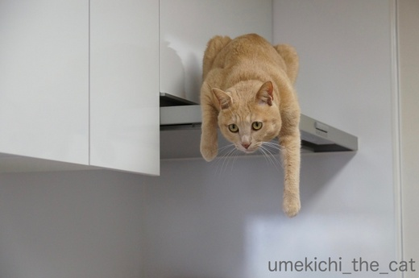
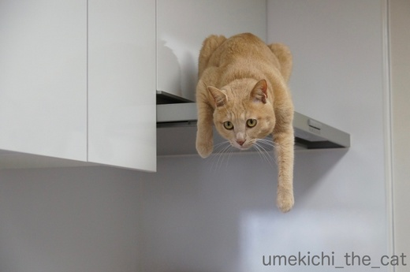

左を開けたら右も開けるで！ [梅吉]
年初めに食器棚の扉を開ける事に成功した梅吉さん。
![[猫]](https://blog.ss-blog.jp/_images_e/101.gif) ひだりをあけたら みぎもあけなあかん
ひだりをあけたら みぎもあけなあかん
と逆サイドの扉に挑戦中です。
カリカリタッパーのありかを変えたのをちゃんと見られてました。
（９秒動画です＾＾）
怒らなきゃいけないところなんでしょうが
踏ん張るあちが面白くて大笑いしながら動画撮っちゃいましたよw
梅吉対策に貼ってあるテープがガッチリ効いていたのでこの時は開けられませんでしたが
テープが甘くなってくるとテープを狙って引きちぎるように開けちゃいます。
こうなると怒る気持ちよりも
「むむむっ！やるな！！」と褒める気持ちになる親バカ飼い主でーす。
ちゃんと怒らないから（怒っても梅吉の場合あんまり効果ないし）
キッチンでのいたずらはとどまるところを知りません。

調理中のおかーさんに茶々を入れる定位置はレンジフードの上。
興味ある食材が登場するとこんな風に身を乗り出してきて
おかーさんの頭をていていしてくるんですよ。
あれこれ熱心なのは良いのですけど火傷だけはしないでくださいよ、梅吉さん。
（火を使う時は本当に神経を使います。おかげで調理後はぐったりー。
手の込んだものはすっかり作らなくなりましたwww）
 ↑ガブッと一押し↑
↑ガブッと一押し↑
連日オリンピックに釘付けです！
世界最高峰の戦いはやっぱり見応えがあります。
羽生くんすごい！！明日も期待しちゃいます！！！
昨夜は女子のカーリング（日本VS韓国）を見たんですが試合の内容はもちろん
彼女たちの北海道弁を楽しんじゃいました＾＾
「○○するかい？」「そだねぇ」「○○でさーーーー」（さーが長い）となどなど
独特なイントネーションで交わされる会話にニヤニヤ。
故郷の言葉ってやっぱりいいものですね。
で、選手の一人が「それでちょっきり」て言ってたのですが
みなさん「ちょっきり」ってわかりますか？
と逆サイドの扉に挑戦中です。
カリカリタッパーのありかを変えたのをちゃんと見られてました。
（９秒動画です＾＾）
怒らなきゃいけないところなんでしょうが
踏ん張るあちが面白くて大笑いしながら動画撮っちゃいましたよw
梅吉対策に貼ってあるテープがガッチリ効いていたのでこの時は開けられませんでしたが
テープが甘くなってくるとテープを狙って引きちぎるように開けちゃいます。
こうなると怒る気持ちよりも
「むむむっ！やるな！！」と褒める気持ちになる親バカ飼い主でーす。
ちゃんと怒らないから（怒っても梅吉の場合あんまり効果ないし）
キッチンでのいたずらはとどまるところを知りません。

調理中のおかーさんに茶々を入れる定位置はレンジフードの上。
興味ある食材が登場するとこんな風に身を乗り出してきて
おかーさんの頭をていていしてくるんですよ。
あれこれ熱心なのは良いのですけど火傷だけはしないでくださいよ、梅吉さん。
（火を使う時は本当に神経を使います。おかげで調理後はぐったりー。
手の込んだものはすっかり作らなくなりましたwww）
連日オリンピックに釘付けです！
世界最高峰の戦いはやっぱり見応えがあります。
羽生くんすごい！！明日も期待しちゃいます！！！
昨夜は女子のカーリング（日本VS韓国）を見たんですが試合の内容はもちろん
彼女たちの北海道弁を楽しんじゃいました＾＾
「○○するかい？」「そだねぇ」「○○でさーーーー」（さーが長い）となどなど
独特なイントネーションで交わされる会話にニヤニヤ。
故郷の言葉ってやっぱりいいものですね。
で、選手の一人が「それでちょっきり」て言ってたのですが
みなさん「ちょっきり」ってわかりますか？

カフェオレ色の梅吉

梅吉 2023年8月10日 永眠


梅吉と出会った譲渡会

犬猫の理由なき殺処分ゼロ
妄想広告
UMEKICHI 光

爆発的に早い！
時々攻撃的！
Thanks to Mr.Boss365
爆発的に早い！
時々攻撃的！
Thanks to Mr.Boss365

すごい♪ 踏ん張っている梅吉さんが
可愛くてたまりませんねぇ～(#^.^#)
怒るよりもまずはカメラ（笑
我が家もそうです！
by きぃ (2018-02-16 19:18)
梅吉さん
扉が重くて足が滑っていますね（笑）
by ma2ma2 (2018-02-16 19:20)
テープよりつっかえ棒です:-)
by tama (2018-02-16 19:32)
梅吉さん、器用です。
ちょっきりは「ピッタリ」、「ちょうどいい」です。
田舎の徳島ではそういう意味でした。
違いますか？
by riverwalk (2018-02-16 21:46)
踏ん張ってツルツルする足が可愛いです。梅吉さん頑張ってますね~。もしもカリカリをゲットできたら、思う存分食べるのが夢なんでしょうか。
by zombiekong (2018-02-16 22:13)
梅吉さ～ん、滑るのを踏ん張るあんよ、筋肉質！
かわいくって爆笑しちゃいます♪
台所でこんな身を乗り出されたら怖いわ～ぐったりしちゃうんですね。
うちのは台所にはあまり入らなかったけど、実は隣の洗面所で観察していることがあり、炒め物でジャーっと大きな音をたてると飛び降りてダーッと逃げていました＾＾；
「ちょっきり」は「ちょうど」？ という気がしますが＾＾
by sana (2018-02-16 22:15)
踏ん張って滑ってる～♪
日々ストイックに困難にチャレンジする梅吉さんに爆笑です(*^▽^*)
子猫の頃、ぐつぐつ煮えるカレー鍋に飛び込みかけたのを機に、ほぼコンロを使わなくなりました^^；
締め出すと扉に体当たりを延々繰り返すので落ち着いて料理できず。
レンジでチン！大幅手抜きでラクチンです^^
ちょっきりは、ちょうど、ぴったり、と思ってました！
by ゆきち (2018-02-16 22:28)
踏ん張り具合がすごい！
ニャンコは茶々の入れ方がお見事ですよね。^^;
「ちょっきり」の言葉、若い頃は使っていたのですが
そういえば最近なぜか使っていません。。。
by yes_hama (2018-02-16 23:34)
梅吉さんはたぶん左利きなので
この向きで扉を開けるのはかなり努力してると思います。
私も怒るより、「なかなかやるなぁ」ですね。
私は「ちょうど」で使ってましたね。
最近は言わなくなったかな＾＾
by ぽちの輔 (2018-02-17 07:14)
ほほう、テープが貼ってあるのですね(^.^)
どうりで、こ〜んなに踏ん張ってるのに開かないハズだわww
「ちょっきり」･･･なんだろう？
関西弁でいう「ちょっきし（ちょうど・ぴったり）」とおんなじ？
by のらん (2018-02-17 07:48)
梅吉さん、全体重をかけて開けようとする姿がプリチー♪( ´▽｀)
こんな姿を見せられると怒るより動画は当然ですよねぇ=(^.^)=
「漢梅吉さん」はこうやってお母さんを常に見守ってるんですね(⌒-⌒; )
by ニッキー (2018-02-17 12:26)
梅吉くん、結構踏ん張って頑張ってる！
私も怒るより面白がっちゃうな。だって綱引きしてるみたいだもの～ｗ
家は屋根みたいな形の大きなレンジフード(お掃除が大変なのよ(^-^;)なので
猫が乗ることはないんだけどフラットだと乗っちゃうのかな。おしゃれ♪
でも、ホント！やけどには注意だよ。
北海道弁。僕だけがいない街のアニメを見ているときに感じた合言葉のような「したっけ」
関東でも「したっけ」って使うんだけど意味が違うみたいで印象的でした(^-^)
by emi (2018-02-17 15:20)
踏ん張ってる足って、ツボですね～♡
梅吉くんは右利きかな？左利きかな？
私もあかりが何かやらかすと、
怒ることなくカメラを取りに走ります( ´艸｀)
キッチンは色々と楽しい場所みたいだけど、
心配でぐったり疲れますよね～(;^ω^)
by マーヤ (2018-02-17 15:48)
梅吉さんの動画、おもしろカワイイ！
これを見たら怒れませんネ(*´∀｀*)。
カーリングは同郷メンバーだから方言
が共通語になっているの、気がつきま
せんでした。次回見るのが楽しみ～♬
by うりくま (2018-02-18 16:47)
ふんばってるふんばってる♪
レンジフードの上の梅吉さんも
気合の入った表情ですね。
しかし、確かに上の方にもけっこう熱風行きますよね。
稼働中はさすがにご遠慮くださいですね。
by ふにゃいの (2018-02-18 22:58)
梅吉くん、やるな。
にゃんこって以外と怪力ですよね^^;
残念でした〜
レンジフードは、いつ見ていても
「ねこ乗れそうだな・・・」って思うのですが
今のところ、わがやの面々は誰ひとり気づいておりません。（ホッ
by Ja-Kou66 (2018-02-19 00:51)
滑り落ちそうなのを、必死で踏ん張ってるんよね(^_^;)
これは動画撮りたくなりますなー！
カーリング女子、なるほど、北海道のイントネーションなんやね。
結構な音量でマイクが拾ってるんで
彼女たちの相談内容に興味津々でした。
コーチの英語もみんなわかってるのかなー？？
最後の件、私も大阪で言う「ちょっきし」かなと思うー。
by よーちゃん (2018-02-19 09:02)
私も目が釘付けになってしまった……。
踏ん張る梅吉さんの、ふ・と・も・も、に♡
開けてほしいやら、開いたら困るやらで、クスクス笑いながら見ちゃいました(^-^)
料理の時は、私もめちゃくちゃ気を使います。
ＩＨの時はそれほでもなかったけど、ガスは怖いですね(T_T)
さて、ちょっきりは、ジャストの意味か、それっきりの略かなぁ。
北海道弁って、ホントかわいい。
津軽海峡を渡るだけで、なんでこんなに可愛さが違うんでしょー、と
思う、青森県人でしたｗｗｗ
by morichan (2018-02-19 15:02)
この位置から監視されると火は使いにくいですね。梅吉君落ちて来ないでね～～(^_^)
「ちょっきり」は「ちょっきし」の事かな？「ちょうど」「ぴったり」って意味？
by palpal (2018-02-19 16:16)
踏ん張っている姿が可愛いね〜
テープで止めているのかい？かわいそうに（笑）
あんなに必死ですから、食器を減らして梅吉さんの場所を作ってくださいな。
ちょっきりはピッタリってことでしょうか？
by kiki (2018-02-19 22:13)
梅吉君のうしろ足がずりずりっと滑ってるところにツボって
何回も観ちゃった(笑)
北海道弁話題になったみたいですね！
わたしも聞いていたらにやにやしただろうなー。
ふふふ、もちろん「ちょっきり」分かりますとも！(笑)
ってか、これ方言なの？？
by リュカ (2018-02-20 09:58)
きぃさん＞
ぐいぃーっと踏ん張っていますよね。
そしてその足が滑っているという二度美味しい動画です＾＾
最近は常にスマホをポケットにいれて
家事をするようになりました！
ma2ma2さん＞
そうそう＾＾踏ん張りきれずに滑ってるんですよね(^▽^;)
tamaさん＞
あ！それいいですね！！
ホームセンターなどで売っている扉開け防止グッズは梅吉に効かないし
テープは梅吉が開けにくいのと同様人間も開けにくいんです。
棒が一番お手軽な方法かも。試してみよう_φ(･_･
riverwalkさん＞
食べたい一心で梅吉は器用になる一方です(-_-メ)
「ちょっきり」その通りです！
徳島では北海道と同じく「ちょっきり」って言うのですねー(・o・)
zombiekongさん＞
私が留守中にも頑張っていることがあるらしく
（踏ん張っているのはオーブンレンジの上）踏ん張っている場所が
足跡だらけになっていることがよくあります(^▽^;)
梅吉の脳内メーカーは「カリカリカリカリ 昼寝 遊び」
かと思われますwww
sanaさん＞
うちも炒め物の大きな音でコーナーを空回りしながら
走って行くことがよくあります。
そのまま引っ込んでくれれば良いのですが
決してあきらめないメゲない子なので
すぐ戻ってきちゃうんですよねー(^▽^;)
「ちょっきり」はそのとおり！「ちょうど」です＾＾
ゆきちさん＞
目標（カリカリ）のためならどんな努力でも怠らない梅吉です(^▽^;)
我が家のキッチンは構造上梅吉を締め出すこともできず・・・
もし扉があったとしてもこてつくんと同じく
扉を壊しかねない勢いで体当たりしそうなので締めることは出来ないだろうなぁ。
にゃんこの安全のためにも手の込んだものは買うor外で食べるのが
良いですよね(^_－)☆
「ちょっきり」は正解です！！関西では「ちょっきし」なんですね＾＾
yes_hamaさん＞
思いっきり踏ん張っているので足跡も付きまくりです (^▽^;)
茶々を入れられるのは楽しいのですが
危ないことをしやしないかとひやひやでもあります・・・
ちょっきり・・・お使いになった過去があるのですねー。
方言ではない疑惑が出てきましたw
ぽちの輔さん＞
ねこの利き手の見分け方、ありましたよね＾＾
気にしていなかったのですが梅吉は左利き？かな？
こんど確かめてみますねー！
ぽちの輔さんもちょっきりをお使いになったことが・・・
方言ではない疑惑がますます濃厚に！ちょい古い言葉！？
のらんさん＞
子供用の扉開け防止グッズは梅吉には効かないような気がして・・・
今の所テープが一番効き目があるのですが
つっかい棒も試してみようか、と思っていますよー。
ちょっきり・・・・うむむむ〜
御察しの通りちょうど・ぴったりの意なのですが
方言ではなく東西で使い分けられているような気がしてきましたw
ニッキーさん＞
一応「こらー！」とは言っているのですが声が笑っちゃって(^▽^;)
猫が踏ん張ったり力んだりしてる姿って可愛いですよねー。
同じ理由でトイレで頑張っている姿も大好物です！！（猫変態w)
by ちぃ (2018-02-20 15:30)
emiさん＞
そうかー！綱引きしている足なのね＾＾
足元がツルツルで（オーブンレンジの上ですw）残念な梅吉でしたwww
フラットなレンジフードは屋根型のフードに比べると
格段にお掃除が楽ですよー＾＾
梅吉が毎日乗ってくるので綺麗にしておかなければならず
お掃除が楽なのは助かりますー。
同時に日々「どんっ」と音をさせて冷蔵庫の上から飛び乗ってくるので
時々取り付け金具が緩んでいないかの確認は怠れません！
「したっけ」若い頃（主に中高時代に）使ってました。
「そんな状況ならば」と別れの挨拶「じゃあねー」の意の
ふた通りの使い方をしていたかな？
今の北海道の若者が使っているかは不明だわw
マーヤさん＞
梅吉の利き手、ちゃんと確認したことないので
今度確認してみますねー＾＾
結構器用なので「りょうほういけるで」ってなるかも！？
あかりちゃんも冷蔵庫の上に乗ったり大活躍ですものね(^▽^;)
梅吉に気を取られて調味料を入れ忘れたり・・・
なんてことも時々あるんですよー（言い訳？( ´艸｀)）
うりくまさん＞
これをやられると毎回笑ちゃって・・・ (^▽^;)
一応「こらーっ！！」と怒っているのですが
梅吉も本気で怒られているのかどうかの区別はちゃんとつくので
イタズラしても大丈夫な所と思っているようです。
困ったものだ・・・（飼い主がw)
日本のカーリング界は北海道弁が公用語じゃないかと思ってますw
by ちぃ (2018-02-20 16:08)
ふにゃいのさん＞
興味のある食材が登場するとレンジフードの上から
梅吉のていていと共に「ふんがーっ」っと鼻息もやってきます(^▽^;)
調理中におこぼれをあげたことなんかないんですけどね。
わずかな可能性にかけてるみたいですwww
強火の炒め物の時などは流石に遠巻きに見てるのですが
とろ火の鍋、なんかは近づこうとするので興味をそらすのが大変です（涙）
Ja-Kou66さん＞
顎の力もありますが腕力もありますよね！！
「全身全霊」で打ち込んでいるのも怪力発揮になるのでしょうかw
レンジフードに乗るならちゃーくんと思われますが
ず〜っと気づかずにいていただきたいですね。
乗られたら本当に神経使いますから・・・
よーちゃん＞
こらー！っと笑いながら真っ先にスマホを構えましたよ(^▽^;)
日頃の心がけのお陰か良い動画が撮れましたw
カーリング女子の英語の理解力は
「言ってることは分かるしちょっとした質問もできるけど
細かいことはね・・・」って気がします。
選手に一人堪能な子がいるので細かい話はその子を通してかなって
思ってました＾＾
ちょっきし・・・関西でも使うのですね。
関東方面の方も使うようだし、ちょっきり・・・方言じゃないのかもー。
morichanさん＞
ご指摘を受けて私もふとももに注目してみましたー！
そして、自分で撮った動画なのに何度も繰り返しみてしまうほど虜に(〃▽〃)
梅吉の新たな魅力を教えていただいてありがとうございます！！
梅吉の場合ガスレンジの上にずかずか侵入してきちゃうので
（強火は逃げますがとろ火は気にしない）
火で身を引くことのないIHも怖いかもです(-_-メ)
熱い所を思い切り踏んづけて肉球を火傷しそう・・・
北海道弁も地域によって結構差があるんですよー。
函館あたりは青森弁と北海道弁のミックスって気がしますw
palpalさん＞
強火の時は降りてこないのですが弱火で鍋をかけておくと
飛び降りてきます。
ちょっと気を抜いた瞬間に来たりするのでほんと怖いんですよ。
ちょっきし・・・その通り〜！
関西の人が使っているの知りませんでした。
方言というほどでもないのかな・・・
kikiさん＞
「〜かい？」と北海道弁でご参加いただいてありがとうございます＾＾
梅吉の場所を作るとなると食器を全部出さなくちゃいけませんw
年末の掃除の時にわかったのですが中で移動できるのですよwww
（お皿を蹴散らしながら・・・）
みなさんちょっきりはおわかりになるのですねー。
方言というほど特色のある言葉じゃないのかなぁ。
リュカさん＞
動画、私も何回も見ちゃってます。自分で撮ったのにwww
知らなかったのですが関西の人は「ちょっきし」って言うんですって。
方言というよりも「ちょうど」のくだけた話し言葉なのかな・・・
大阪でも気にしないで使っちゃおうっと＾＾
カーリングの試合ぜひ見てー！
語尾が下がるイントネーション、
きっと私もあんな話し方してるんだろうなー。（笑）
by ちぃ (2018-02-20 17:38)